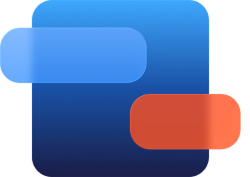
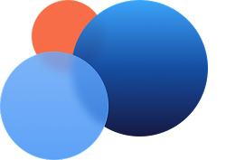
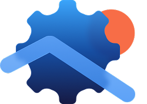

Не просто функция. Новый рабочий контур ИТ-службы
Без U-Admin
Для удалённого доступа используются отдельные программы
Инженер вручную выясняет имя устройства и параметры подключения
Сессии не связаны с заявками и не попадают в аудит
Поддержка удалённых филиалов занимает слишком много времени
С U-Admin
Один рабочий контур
Быстрее до причины
Прозрачность поддержки
Единая история и измеримый результат
Три причины выбрать U-Admin
Один рабочий контур
Заявка, пользователь, устройство и удалённая сессия связаны между собой.

Быстрее до причины
Инженер начинает диагностику без долгого обмена инструкциями с пользователем.
Прозрачность поддержки
Фиксируйте инициатора, время, устройство и результат удалённой работы.
Как это работает
Заявка
Пользователь описывает проблему
Контекст
Система находит устройство
Сессия
Инженер подключается
Закрытие
Результат записан в заявку
Возможности модуля
Запуск
из заявки
из заявки
Web SSH / RDP
Связь
с устройством
с устройством
Ролевая
модель
модель
Журнал
сессий
сессий
Работа по
филиалам
филиалам
История
действий
действий
Единый
контекст
контекст
U-Admin работает как единая система
Эта функция не изолирована. Она использует общий контекст пользователей, оборудования, заявок, площадок, прав доступа и аналитики. Поэтому данные не приходится переносить между несколькими решениями.
Единые данные
Одна модель пользователей, активов, заявок и подразделений.

Единые процессы
Маршрутизация, права, уведомления, SLA и аудит.
Доступная адаптация
Настраиваем систему под процессы компании без высокой стоимости доработок.

Кому подходит
Компаниям с филиалами, площадками и централизованной ИТ-службой
Организациям, которые заменяют дорогой, устаревший, иностранный или самописный Service Desk.
Командам, которым нужен единый контур заявок, оборудования и удалённой поддержки.
Заказчикам, для которых стоимость и скорость кастомизации критичны.
Частые вопросы
Можно ли подключаться к рабочему месту пользователя прямо из Service Desk?
Да. В U-ADMIN удалённая поддержка связана с контекстом заявки и ИТ-актива: инженер работает с обращением, видит связанное оборудование и может перейти к доступному сценарию удалённого управления. Это сокращает переключения между Service Desk, учётом оборудования и отдельными инструментами поддержки.
Какие протоколы удалённого доступа поддерживает U-ADMIN?
В U-ADMIN предусмотрено удалённое управление по Web SSH и RDP. Web SSH позволяет запускать временную SSH-сессию из карточки конфигурационной единицы после проверки прав доступа; доступность RDP зависит от используемого сценария и настроек инфраструктуры.
Можно ли использовать U-ADMIN для удалённой поддержки филиалов и офисов?
Да. U-ADMIN объединяет заявки, сведения об оборудовании и инструменты удалённого управления в одной системе, поэтому его можно использовать для централизованной поддержки распределённой инфраструктуры, филиалов и удалённых рабочих мест.
Как обеспечивается контроль доступа при удалённом подключении?
Удалённые действия выполняются с учётом прав пользователя. Для Web SSH предусмотрена проверка прав и мастер-пароля, а секреты по конфигурационным единицам хранятся в зашифрованном виде с аудитом операций доступа.
Можно ли проверить доступность компьютера или сервера перед подключением?
Да. В U-ADMIN есть Network Check для проверки доступности узла, включая Ping и TCP/22, а также сетевые данные по конфигурационной единице. Это помогает инженеру сначала проверить соединение, а затем переходить к удалённой сессии.
Видит ли инженер информацию об устройстве перед удалённой поддержкой?
Да. В карточке ИТ-актива доступны модель и характеристики, владелец, статус, файлы, история изменений и связанные обращения. Инженер получает контекст по рабочему месту до начала удалённого подключения.
Можно ли хранить учётные данные для доступа к оборудованию в U-ADMIN?
Для конфигурационных единиц предусмотрено хранение зашифрованных секретов с созданием, изменением, удалением и контролируемым раскрытием. Действия с доступом к секретам фиксируются в аудите.
Может ли U-ADMIN заменить отдельную программу для удалённой поддержки?
Для сценариев, которые покрываются Web SSH и RDP, часть задач удалённой поддержки можно выполнять непосредственно в U-ADMIN. Необходимость отдельного инструмента зависит от требований компании к протоколам, функциям сессии и политике информационной безопасности.
Проверьте U-Admin на реальных сценариях вашей ИТ-службы
Покажем систему на ваших процессах, оценим миграцию и составим план запуска

15
15 часов системного администратора в подарок